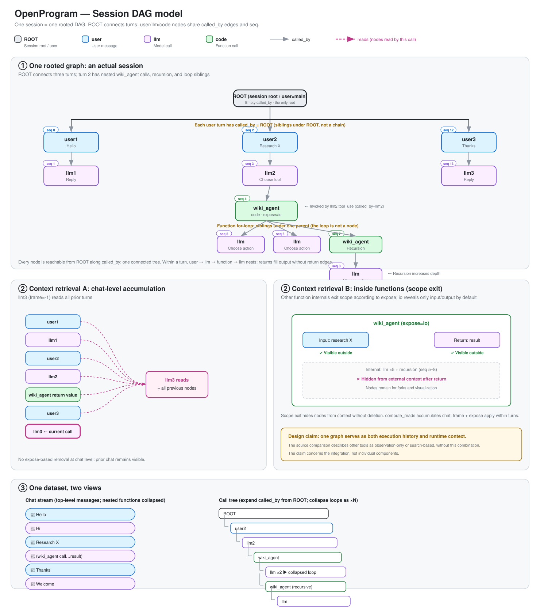

OpenProgram Docs
OpenProgram Docs
Session DAG — 设计#
本文是 agent 执行记录的权威设计：数据模型、边与不变量、分支与 spawn、上下文渲染、 上下文装配、压缩。模型选型的论证见
../../research/execution-trace-model-selection.zh.md。 调用流程图见../agent-call-flow.svg。 可视化渲染规范（布局、连线、图例、默认可见性）是rendering.zh.md——绘制以它为准，本文只讲语义。
{kind=link}

1. 概述与动机#
整个会话是一张有唯一根的 DAG。每条用户消息、每次 LLM 调用、每次函数调用都是同一
张图里的节点，共享一个单调递增的 seq。这张图同时是：
- 持久化记录——发生过什么的唯一存底；
- 运行时上下文——每次 LLM 调用的上下文都是对图中一条路径的渲染；
- 展示来源——聊天流、调用树、minimap 都是同一批节点的投影。
这种融合正是设计的核心。可观测性系统（LangSmith、Datadog）把每个请求拆成独立
trace、用 session 标签分组，因为它们只做事后观察、从不回读记录。本系统要回读：
render_context 沿同一张图、同一个 seq 取历史，所以各轮必须连成一张图。唯一根 +
共享 seq 是"一张图"的硬约束——没有根，每个顶层节点就是各自孤立的图。
这个设计的核心在于融合本身：记录下的调用树就是运行时上下文，每次调用按 frame 作用域和逐函数的 expose 设置查询它，且所有节点永久保留（支撑 fork 与 replay）。构成 它的单项技术（调用栈追踪、图 fork）都常见，把三重身份合在一张图上的整体做法不常见。
2. 数据模型#
节点（Call）#
一个数据结构覆盖一切。LLM 调用永远是同一种 llm 节点，不因触发方是用户还是函数而
分裂。
Call:
id 唯一标识
seq 单调递增整数，全局时间序（唯一排序键）
created_at 墙钟时间（给人看，不用于排序）
role "user" | "llm" | "code" ← 只决定渲染，不分裂本质
name 模型 id / 函数名 / 用户名
input prompt / 函数参数 / None
output 回复 / 返回值 / 用户文本
status running | completed | error | cancelled
caller 谁调用了我（子调用父 id）；非子调用节点为空
predecessor 聊天里谁在我前面（对话链父 id）；
顶层 schema 字段——这条边唯一的存储位置
reads 本次 LLM 调用读了哪些节点（渲染用引用，不是结构边）
metadata token 用量 / 模型 / source / expose / tool_call_id …
LLM 叶子字段对齐 gen_ai.*
定义在 openprogram/context/nodes.py。
三种 role 与 ROOT#
| 场景 | role | caller | predecessor |
|---|---|---|---|
| 会话根（ROOT） | user（特殊，display=root） |
空 | 空 |
| 用户发消息 | user | ROOT | 上一轮 llm 回复；会话首节点用哨兵 "ROOT" |
| LLM 回复 | llm | 本轮 user（顶层）或所在 code 节点 | 本轮 user |
| LLM 调工具 | code | 该 llm 节点 | — |
| 用户手动调函数 | code | 空 | 当前分支 head（根层为 "ROOT"） |
| 函数内调 LLM / 子函数 | llm / code | 所在 code 节点 | — |
循环不占节点：跑 N 次的循环 = 同一父节点下的 N 个兄弟（按 seq 排序）；可视化可以折
叠成 ×N，但数据仍是 N 个节点。一次函数调用只有一个 code 节点——绝无 anchor、
placeholder 或任何辅助节点。
status 词表#
所有节点统一一套：running | completed | error | cancelled。聊天与函数路径共用；
error 节点带结构化 type/trace 元数据，用户取消写 cancelled，绝不写 error。
3. 边与不变量#
两条边，绝不混为一条#
| 边 | 字段 | 含义 | 谁有 |
|---|---|---|---|
| 子调用边 | caller |
谁调用我执行 | 只有真被子调用的节点；普通顶层回复留空 |
| 对话链边 | predecessor |
聊天顺序上我接在谁后面 | user / llm 节点 |
两条边都有向无环。caller 让所有顶层节点汇聚到 ROOT（一张连通图）；predecessor
表达聊天顺序并区分分支。二者正交：
一张图（共享 seq，唯一根）。每个节点：caller(C) / predecessor(P)
ROOT
├ user1 seq0 C=ROOT P="ROOT" ┐ 顶层 user 经 caller 挂在 ROOT 上；
│ └ llm1 seq1 C=user1 P=user1 │ 对话顺序经 predecessor 成链：
├ user2 seq2 C=ROOT P=llm1 │ user2.P=llm1, user3.P=llm2
│ └ llm2 seq3 C=user2 P=user2 │ fork = 同一 predecessor 有多个对话子节点
├ user3 seq4 C=ROOT P=llm2 ┘
为什么要两条边：分支必须靠 predecessor 区分。用户重发消息时同一位置长出两个子节
点，仅凭 seq 分不清哪个子节点属于哪条分支线。单边模型（caller + seq）表达不了分支。
predecessor 是 schema 字段#
predecessor 是 Call 的顶层字段——唯一存储位置。序列化只写顶层；没有 metadata 镜
像，没有旧格式读取路径。把这条边放进 schema 而不是事后校验 metadata，才让读方可以依
赖它：链接错的分支无法被 linter 修复，所以 append 路径必须拒绝制造它。
写入不变量#
在 store 的 append 路径强制执行（openprogram/store/session/session_store.py）：
每个 ROOT 级对话节点（role 为 user/llm、无真实 caller）必须带 predecessor。
违规 append 抛 PredecessorMissingError，而不是悄悄在 ROOT 处 fork 会话。合法例外：
- 会话首节点与显式根 fork——带哨兵
predecessor="ROOT"（不是空），所以重试 首条消息会产生不变量允许的合法 ROOT 级兄弟； - spawn 分支根——只能经
spawn_branch()（§4）创建，predecessor=None、caller指向发起节点； ask_user应答节点——带非 Noneinput的 user 节点是调用内的被调方回复， 不是对话轮；- 压缩 summary 节点——按 §8 是合法链上成员。
读取不变量#
get_branch 与 list_branches 纯沿边行走——没有 caller 回退，没有 seq 拼接，没有
猜测。无 predecessor 的节点必须是合法分支终点（spawn 根、ROOT 本身、会话首节
点）；否则就是坏数据，抛 BrokenPredecessorChainError 并带上出问题的节点 id。坏数
据浮出水面，绝不被绕过去。
4. 分支与 Spawn#
Fork#
分支是同一位置上的另一种可能。分支节点的 predecessor 与被替换节点完全相同——
同一 predecessor 有多个对话子节点即为 fork。不存在特殊节点类型：
| 场景 | 被替换节点 | 分支节点 | 共享边 |
|---|---|---|---|
| 用户重发消息 | user2 (P=llm1) | user2' (P=llm1) | predecessor |
| LLM 重试 | llm1 (P=user1) | llm1' (P=user1) | predecessor |
| 工具重试 | code (C=llm1) | code' (C=llm1) | caller |
失败与重试#
error 是终态，不是缺失态。 抛异常的一轮和成功的一轮走完全相同的收尾：节点以
status=error 写入，本轮提交进 git，head 停在这个 error 节点上。失败的这一轮是会话
里发生过的事实，记录里就得这么写。
在错误路径上跳过收尾，会恰好在出问题的地方给 git 时间线留一个洞——而那正是历史最值
得留存的位置。它还会让重试从一个从未写过 commit 的 predecessor 上分叉。用户取消同样
按终态收尾，写 status=cancelled。
错误路径上仍然执行的收尾步骤，是那些维持记录完整性的步骤：git 提交、项目提交、 shadow-git 提交、快照淘汰。那些以"已有完整回复"为前提的步骤——context-commit 回填、 用量反馈、自动起标题——对没有回复的一轮没有意义，跳过。
重试不需要单独机制。它就是一次普通 fork：重试节点取失败节点的 predecessor，这一点使 它成为兄弟而非后继。由普通规则直接推出两个结果：
- 失败的那条线保留。 error 节点留在图里且仍可达。切到它那条分支就能看到当时到底 发生了什么。
- 失败的那条线不进入重试的上下文。
render_context沿活跃分支行走，error 节点不 在这条分支上。重试永远看不到它正在重试的那个错误。这里没有任何按 status 的过滤，分 支隔离本身已经做到了。
Spawn#
SessionStore.spawn_branch(session_id, caller_node_id, *, source, name=…) 是开
干净 spawn 根的唯一原语。它创建分支根 user 节点（predecessor=None、
caller=caller_node_id、metadata.source、metadata.spawn_branch_root=True），
注册为 head，返回节点 id。spawn 调用方（task runner、协作消息、后台 agent）一律调
用该原语创建干净起点。继承式 spawn 是普通的精确 fork：它的第一个 user 节点以
指定节点为 predecessor。
spawn 分支根不挂在 ROOT 上：它的 caller 指向发起它的节点，经该节点维持单连通
图不变量。对于跨会话精确 fork，源 session S 把 attach 卡片保留在发起节点 A 旁边，
目标 session T 存储新 user 节点：predecessor=M、caller=A、
metadata.spawned_from_session=S。单个 session 的图无法画出指向另一个 session 节点的边，
所以目标图投影把该外部 caller 归到 ROOT，并把节点标记为 spawn_remote；源节点标记为
spawn_out。源卡片指向 attach.session_id=T 和目标分支 head。跨会话 spawn 不移动任一
session 当前选中的 HEAD；目标结果只注册为分支 tip，后续异步回送再作为普通 turn
推进源 session 的 HEAD。
spawn 分支的上下文是干净的：spawn 分支上的 get_branch 止步于 spawn 根，不会经
caller 边漏进父分支。spawn 分支的聊天视图只显示本分支自己的历史。反向同样成立：从
父分支 head 做 render_path 时，不会沿 caller 下探进 spawn 分支（见 §6）。
完成通知锚定在 HEAD#
异步子 agent 跑完，会往派它的会话里写回两样东西：attach 指针，锚在发起调用的那一轮，
因为调用就发生在那里；以及一条通知轮（metadata.source = "task_followup"），锚在会话
当时的 HEAD，并像任何一轮那样推进 head。
两者锚点不同，是因为说的不是一件事。attach 指针是一次调用的记录，就该待在调用旁边； 通知是对话里新的一轮，就该待在对话末尾。
这正是 N 个子 agent 不会被回答 N 次的原因。把每条通知都锚在发起它的节点上，它们就成了 同一轮的兄弟——三个子 agent 跑完就是三条平行分支、各自一个回复，用户发了一条消息，眼看 着它被回答三遍。锚在 HEAD 上，它们连成一条链：
… → 发起轮 → 通知₁ → 回答₁ → 通知₂ → 回答₂
runner 让 TurnRequest.branch_from 保持 INHERIT_PARENT，派发前也不再回退 head，锚定
交给 dispatcher 的普通追加路径完成。并发用每个投递会话一把锁处理
（JobRunner._followup_lock）：两个子 agent 同一毫秒跑完，也依次占用轮次，第二条读到的
HEAD 已经包含第一条的回答。
5. 头指针与分支管理#
- head：会话维护一个
head_id——当前活跃分支的末端。每条写路径都把它推进到真 实节点 id；函数调用完成后 head 移到实际 code 节点，绝不指向 placeholder。悬空的 head 会让分支行走不可达、会话渲染为空。 - get_branch(session_id, head_id)：从 head 沿 predecessor 链走到终点，返回该分 支的线性历史。
- list_branches(session_id)：枚举 conversation predecessor 图中的叶子节点。
conversation 节点包括 user、llm，以及 caller 为空或
ROOT的顶层 Program。节点只要 有任一此类 successor，就是祖先节点，不能再次作为 branch tip。内部 execution child、 runtime/attach 行与 context 行不延续 conversation，因此不取消其 owner 的 tip 身份。 共享同一 predecessor 的并行顶层 Program 仍是不同叶子。不存在特殊的主路径 tip fallback：已合并节点和非 conversation 节点始终保持排除。分支名存在会话 meta 的branches: {head_id: name}。
6. 上下文渲染#
所有上下文都经由 render_context 从图中取出。哪些节点进入上下文，由一条判定规则
决定：
一个节点进入渲染，当且仅当它沿
caller上溯的最近 ROOT 级祖先位于head_id的 predecessor 主链上，且 frame/expose 规则放行。
具体过程：render_context 从 head_id 沿 predecessor 链走到分支起点，得到当前分
支的主链；对主链上的每个节点，再按 frame 与 expose 规则过滤它的 caller 子树，通过
的节点进入渲染。seq 只用来排序，不参与上述判定。因此分支之间的隔离由行走过程天然
保证，不需要引擎在取出之后再做过滤。引擎只做三件事：解析 head、调用
render_context、把结果交给 render_dag_messages 翻译成 provider 消息。
ROOT 本身不算 ROOT 级祖先。所有顶层对话节点都带 caller="ROOT"（§3——正是它让全图
连通），若展开 ROOT 的 caller 子树，会把会话里所有兄弟分支重新放进来。ROOT 级节点
的"最近 ROOT 级祖先"就是它自己；行走绝不展开 ROOT。
spawn 分支根（metadata.spawn_branch_root）同样不经 caller 边进入。spawn 分支是
独立对话，结果经返回值 / attach 指针回流。若从父主链展开 spawn 根，会把 spawn 的
指令和裁决泄漏进发起分支（例如 Goal 工作 Agent 读到自己的 judge）。排除是单向的：
从 spawn 分支内部的 head 渲染时，仍通过主链看到该分支本身。
frame 语义：
- 顶层聊天（frame = −1）：主链上每一轮全量可见——累加；该分支的所有历史轮平铺 喂入。
- 函数内（frame = 该 code 节点的 seq）：frame 前的历史 + 函数自身 frame 内的进
展可见；其他函数的内部按各自
expose弹出（默认io只暴露输入输出）。
原语是纯函数：读路径不写盘。必须落盘的事（大节点 spill）发生在写路径（§8）。
工具节点的渲染：带 metadata.tool_call_id 的 code 节点（模型 tool_use）渲染为真
ToolCall/ToolResult 对、归入所属 llm 节点的 assistant 消息；不带的（直接函数调用）
渲染为文本对。两个视图投影同一份数据：聊天流（顶层 user + llm 按 seq，嵌套折叠）与
调用树（沿 caller 全展开，循环兄弟折叠 ×N）。
7. 上下文装配#
一个 system prompt，一个装配器#
全项目只有一份 system prompt（身份 + 项目记忆 + 统一工具列表 + skills），由唯一装
配器 context.build_system_prompt(agent_profile, tools, mode) 产出，所有模型调用
共享——顶层聊天与函数体内一视同仁。预算统计的就是实际发出的那个字符串；装配器输出等
于线上输出。
prompt 默认从会话开始到结束恒定。恒定前缀让 provider KV 缓存命中最大化，函数内的模 型也拿到与聊天模型相同的项目背景。推论：
- 不拆分成聊天版和函数版。
- 没有"可变尾段"：工具列表也统一，不随调用点变化——一变前缀就变，长上下文全部 miss。
- 例外走定制层：个别调用想要精简 system，在调用点显式声明，自愿承担 cache miss。
- 函数内防误调工具（如自递归）靠用户轮开头的情境提示 + 递归深度上限兜底——绝不靠改
system 工具列表。详见
../execution/agentic-self-recursion.zh.md。
prompt 被记录，而非隐含#
装配出的 prompt 哈希一旦变化（会话开始、工具集变更、plan 模式切换），store 就在当
前分支追加一个 role=code 节点，name="context/system_prompt"、caller=ROOT、
output 为全文。渲染时取主链上最新的该类节点作为线上 system 消息。任何历史调用的
replay 都能复现当时实际发出的 prompt。不引入第四种 role；context/* 名字保留并在聊
天视图隐藏（与隐藏 summary 节点同一机制）。
memory prefetch 位于用户轮内#
预取的记忆渲染为当次用户节点线上消息内的前缀块，并存入该节点的 metadata
（memory_prefetch）。system prompt 与工具段跨轮字节级稳定（历史继续命中缓存），
replay 看到的就是模型当时看到的。该块不参与老化；与本轮其他用户内容一样随轮消亡。
多模态内容#
图片与文件就是节点内容，与文本无异——没有注入 hook。节点存引用（正文放附件目录），
内容完整又不撑爆搜索索引。render_context 取节点即取其全部内容；渲染按引用加载图
片。
8. 压缩与老化#
summary 节点入链#
压缩是 append-only 的插入。summary 节点为 role=llm、name="context/summary"、
predecessor = 它覆盖的第一个节点的 predecessor、metadata.covers_ids =
它所替代的链节点的确切 id 列表（用 id 而非 seq 区间——姐妹分支的 seq 交错）。
其余一切不变：保留尾段保持自己的 id 和 predecessor，不改任何边，HEAD 原地不动
（append 规则只在链延长时推进）。渲染应用链段替换（context/compaction.md
第三节）：完整包含覆盖链段的链渲染为 [summary, 保留尾段…]；其他链按原文渲染。
压缩是滚动摘要——每份新摘要吸收上一份，extra_meta._last_summary_id 标记唯一
现役者，被取代的摘要是惰性遗迹。
WebUI 载荷把 covers_ids 加上被覆盖轮次的 caller 子树后下发到 summary 行
（webui/graph_builder.py），渲染器画胶囊和它的折叠时因此不必做 seq 运算——见
dag/rendering.md 第九节。完整规范：context/compaction.md。
老化边界只进不退，渲染可精确重放#
尾轮老化边界只在轮提交时推进，绝不在轮中途（逐调用滚动的边界每次调用都打破缓存前
缀）。每个 llm 节点在调用发生的那一刻记录
metadata.render_manifest = {policy_version, aged_before_seq, spilled: [...]}。
replay 一次调用 = 用 manifest 记录的策略渲染，而不是今天的策略——同一张图任何一天渲
染出相同字节。
写时 spill，单一管线#
超过阈值的节点在记录时落盘 spill（一次、确定性），绝不在碰巧被渲染时——读路径保 持无副作用，正是 §6 的要求。DAG 渲染是唯一的上下文管线：没有回退装配路径。渲染 抛错则本轮带错误可见地失败。静默回退会掩盖坏掉的管线；响亮失败才是特性。
9. 存储层#
会话持久化在 git 后端的 store（openprogram/store/session/）：
- 每会话一个磁盘上的
GitSession，位于<state>/sessions/<id>/； - 每会话一个内存中的
SessionMemoryIndex，懒加载，持有行走所用的 node-by-id / children-by-predecessor 索引； head_id与分支名存在会话的meta.json；- store 只持久化原始节点 + meta；context commit 属于 commit 子系统。
@agentic_function 的函数体在 spawn 的子进程里跑（全新解释器而非 fork——父进
程已加载 PyTorch/libomp，fork 后子进程首次 BLAS 调用会 SIGSEGV），stop 可对进程组
SIGKILL。子进程用自己的 SessionStore 写 code 子树；父进程执行结束后 invalidate 缓
存以读取磁盘真相。函数调用的单一事实来源是 SessionStore 的 code 子树；实时
WebSocket 帧与刷新加载都是它的投影，必须产出同一张卡片。
附录：实现状态#
本文档的每一节都已实现。数据模型、边、不变量、spawn 原语、纯沿边分支行走
（§2–§5）、§6 的路径原生渲染、§7（唯一装配器、context/system_prompt 节点、
memory prefetch 迁移）与 §8（基于 covers 的 summary 节点、只进不退的老化边界、
render manifest、写路径 spill、单管线强制）在代码中均已成立；细节以
openprogram/context/nodes.py、openprogram/context/components.py、
openprogram/context/system_prompt_node.py、openprogram/context/aging.py、
openprogram/context/spill.py 与
openprogram/store/session/session_store.py 的代码为准。
因此压缩不再需要写入不变量的豁免：summary 节点带着它所覆盖区间的 predecessor，
像任何其他节点一样入链。context/summary 是唯一对聊天视图保持可见的
context/* 名字——它的输出是替代被覆盖区间的真实对话内容，而非管线机械。
为消融准备了五个环境开关，全部在调用时读取，因此一次实验可以只动一个变量而无需
重新导入：OPENPROGRAM_TOOL_AGING、OPENPROGRAM_TOOL_AGING_TAIL_TURNS、
OPENPROGRAM_TOOL_AGING_MAX_RESULT_CHARS、OPENPROGRAM_NODE_SPILL，以及
OPENPROGRAM_EXPOSE_DEFAULT（它只改变未指定的 expose= 的含义——显式指定始终优先）。
相关文件#
openprogram/context/nodes.py— Call schema + render_context、covers略去openprogram/context/components.py— 唯一的 system prompt 装配器（§7）openprogram/context/system_prompt_node.py—context/system_prompt记录 +context/*隐藏（§7）openprogram/context/aging.py— 棘轮式老化边界 + render manifest（§8）openprogram/context/spill.py— 写路径大节点 spill（§8）openprogram/context/persistence.py— 基于covers的 summary 节点（§8）openprogram/context/render.py— render_dag_messagesopenprogram/store/session/session_store.py— append 不变量、get_branch、 spawn_branch、list_branchesopenprogram/agent/dispatcher/__init__.py— 聊天入口、agent loopopenprogram/agentic_programming/runtime.py— 函数体内模型调用rendering.zh.md— 可视化渲染规范（绘制的权威）